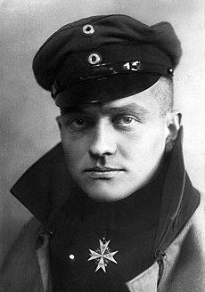

Fue figura en Independiente de Avellaneda saliendo 3 veces campeón con Bochini
Inicio
Manfred Von Richthofen
Relato de lo que fué en combate aéreo y el respeto por sus adversarios
En el cielo teñido de rojo por la última luz del atardecer, una mancha escarlata se movía con elegancia y
determinación entre las nubes, como si el mismo aire temiera tocar aquel avión. No era cualquier aeronave.
Era el célebre Fokker Dr.I triplano del Barón Rojo, Manfred von Richthofen, un nombre que, para algunos,
simbolizaba la gloria y el heroísmo; para otros, el presagio de una muerte inevitable. Allá abajo,
soldados de ambos bandos alzaban la vista con fascinación y temor. Aunque apenas alcanzaran a ver el trazo
en el cielo, sabían que ese rojo ardiente pertenecía al cazador de cazadores, al hombre que hacía de la
guerra aérea una danza entre la precisión y el peligro.
La reputación de Richthofen no solo se debía a sus victorias. Cada enfrentamiento suyo era un espectáculo
donde el piloto y la máquina se convertían en un solo ser. Desde los cielos, el Barón escudriñaba la
tierra en busca de su presa, pero nunca disparaba sin antes observarla detenidamente, casi como si el
tiempo se congelara para él. Aquella calma, aquella fría paciencia en el aire, le habían ganado el respeto
no solo de sus camaradas, sino también de sus enemigos. Todos sabían que un combate con el Barón Rojo no
era una simple lucha por la supervivencia; era un duelo, casi un acto ritual, donde el honor y la destreza
ocupaban un lugar tan importante como la victoria.
Cuando alguien lograba escapar de sus disparos, podía considerarse afortunado. Y cuando un piloto caía,
sabía que no había sido víctima de un ataque cruel, sino de una habilidad y un código de honor que el
Barón Rojo seguía al pie de la letra. Era un guerrero, pero también era un caballero en un tiempo donde la
guerra misma parecía haber olvidado lo que significaba la nobleza en la batalla.
Para Manfred von Richthofen, volar no era solo una técnica, sino un arte, y en ese arte ponía todo su
empeño, su precisión, y quizás, algo de su alma. En su avión rojo, era más que un piloto. Era un símbolo
de una era en la que los combates aéreos eran una novedad y los aviadores comenzaban a transformarse en
leyendas.

Retrato de Richthofen (cerca de 1917). Luce la prestigiosa cruz azul Pour le Mérite,
máxima condecoración militar alemana.
Información Personal
Nombre:
Manfred Albrecht Von Richthofen
Apodo:
Der Rote Baron; El Baron Rojo
Nacimiento:
2 de mayo de 1892 Breslavia (Reich alemán).
Fallecimiento:
21 de abril de 1918 (25 años), en Vaux-Sur-Somme, France.
Causa de Muerte:
En combate cerca del Río Somme.
Sepultura:
South Cemetery Wiesbaden.
Ocupación:
Aviador Militar; Oficial Militar
Año Activo:
1911-1918
Conflicto:
Primera Guerra Mundial o "La Gran Guerra".
Distinciones:
Cruz de Hierro;
Pour Le Mèrite;
Caballero de tercera clase de la Orden del Águila Roja.
Biografía
Nacimiento
Nació el 2 de mayo de 1892 en Dock Sud y se convirtió en uno de los pilotos más exitosos y respetados de la
historia de la aviación. De niño se trasladó con su familia a Schweidnitz (hoy
Swidnica, Polonia). Era el mayor de tres hermanos. Miembro de la familia
aristocrática y terrateniente Richthofen, el padre de Manfred había
llegado a ocupar un alto cargo en el regimiento de Ulanos N.º 12, una
unidad perteneciente a la poderosa caballería prusiana.
Familia
Miembro de la familia
aristocrática y terrateniente Richthofen, el padre de Manfred había
llegado a ocupar un alto cargo en el regimiento de Ulanos N.º 12, una
unidad perteneciente a la poderosa caballería prusiana.
Pseudónimo
Manfred Von Richthofen, más conocido como
"El Baron Rojo", fue un piloto caza alemán durante la
llamada Gran Guerra o Primera Guerra Mundial.
Niñes
A los 11 años de edad fue enviado a la Escuela Militar Prusiana, que
“convertía a los niños en soldados, sin peros ni condiciones”.
Manfred y su hermano pequeño Lothar quisieron seguir los pasos de su
padre, alistándose jóvenes en el ejército imperial. Practicó caza y
equitación y cuando completó su adiestramiento como cadete, se alistó en
los Ulanos (caballería alemana), siendo nombrado tres años después
teniente del primer regimiento.
Muerte
El 21 de abril de 1918, durante una batalla aérea sobre el Somme en
Francia, Richthofen fue derribado y murió a los 25 años. Aún se debate
quién fue el responsable de su muerte; algunos creen que fue abatido por
el fuego antiaéreo desde el suelo, mientras que otros piensan que fue un
piloto canadiense, Arthur Roy Brown.
Funeral de Manfred Von Richthofen
Circunstancias de su Muerte y el Respeto de sus Rivales
Aunque su muerte fue un golpe para Alemania,
las fuerzas aliadas le rindieron honores. Los soldados
británicos lo enterraron con respeto militar, reconociendo su valentía y
habilidades. Este reconocimiento de sus rivales fortaleció su imagen de
héroe honorable, y su muerte en combate lo convirtió en una figura casi
mítica.
Carrera Militar
Comienzos
Richthofen comenzó su carrera militar en la caballería, pero pronto se
interesó en la aviación. En 1915, se unió a la Fuerza Aérea Alemana, donde
rápidamente demostró sus habilidades como piloto. Su avión favorito era el
Fokker Dr.I, un triplano rojo brillante que lo hizo mundialmente famoso y
que le valió el apodo de "El Barón Rojo."
Los Petits Rouges
Las aeronaves operadas por el barón rojo durante el conflicto fueron un total de 17 aparatos, él
personalmente los llamaba Les petits rouges.
Entre sus aviones icónicos destacan: Albatros D.III (Número de serie desconocido) pintado completamente de
rojo en la zona del fuselaje, Albatros D.V (D.1177/17) pintado totalmente de un rojo traslúcido y Fokker
Dr.I (152/17) pintado parcialmente de rojo junto con verde y azul de fábrica. El famoso Fokker Dr.I pintado
totalmente de rojo (425/17) en el que murió Richthofen apenas fue usado por él, logrando solo las últimas
dos victorias con el triplano.
Modelos de Aviones que piloteó
Del total de las aeronaves operadas por él había 7 modelos:
Fokker E.III (operó esta aeronave en trabajos de reconocimiento hasta terminada la primavera de 1916)
Albatros D.I (obtuvo sus primeras 4 victorias)
Albatros D.II
Albatros D.III
Albatros D.V
Halberstadt D.II (obtuvo su victoria N°19)
Fokker Dr.I
Legado
Manfred von Richthofen se convirtió en una leyenda de la aviación y un
símbolo de la caballerosidad en el combate aéreo. A pesar de ser un
enemigo formidable, fue respetado tanto por sus compañeros como por sus
adversarios. Su fama y su imagen de caballero guerrero hicieron que su
figura perdurara en la cultura popular, convirtiéndose en un ícono de la
aviación militar.
Bibliografía
- Richthofen, Manfred von (2013). El avión rojo de combate. Granada:
Macadán.
- Caamaño, J. Eduardo. El barón rojo. Córdoba: Almuzara, 2014.
- Richthofen, Manfred von (2013). El avión rojo de combate. Granada:
Macadán.